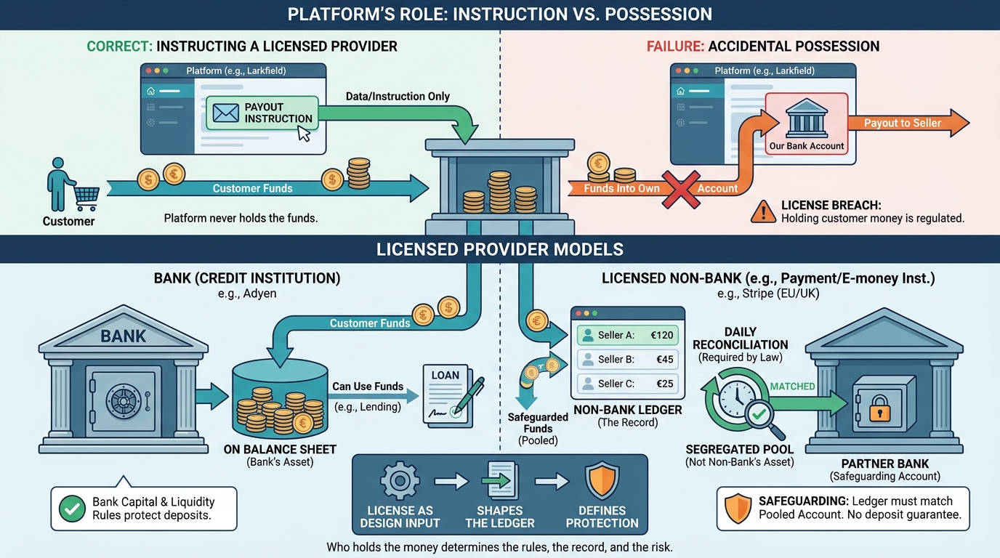

Part III — LEDGER: Recording and Moving Money
Whose Money Is It? Licences, Safeguarding and Where Funds Sit
AI-assisted: researched and written with Claude Code; illustrations generated with Gemini. How this works

Image generated by Google Gemini (gemini-3-pro-image-preview)